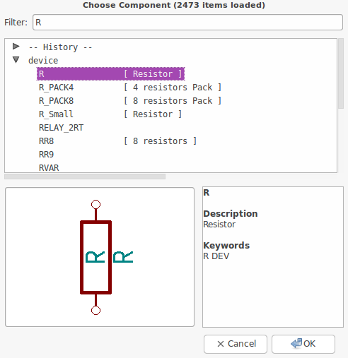
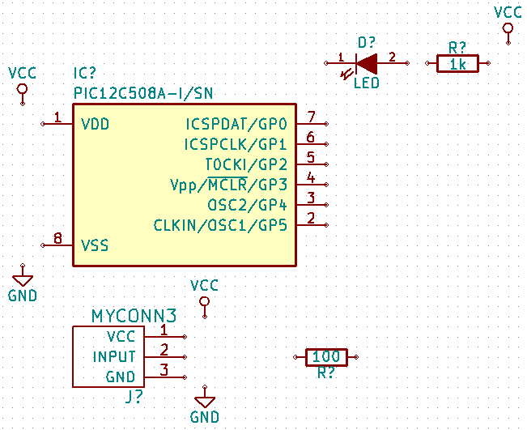
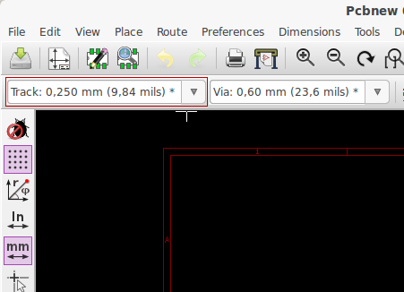
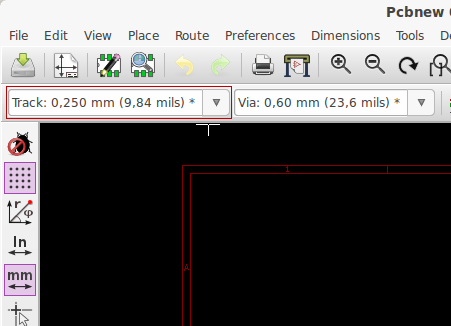
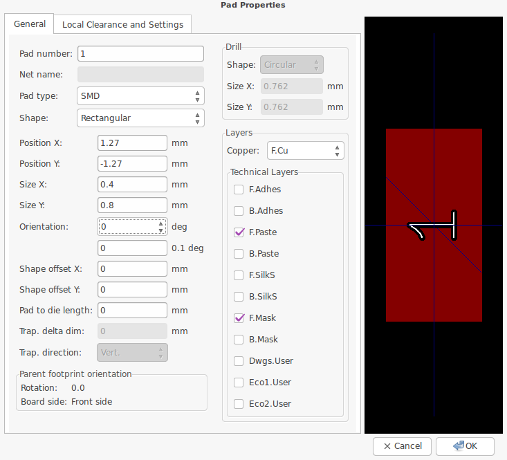
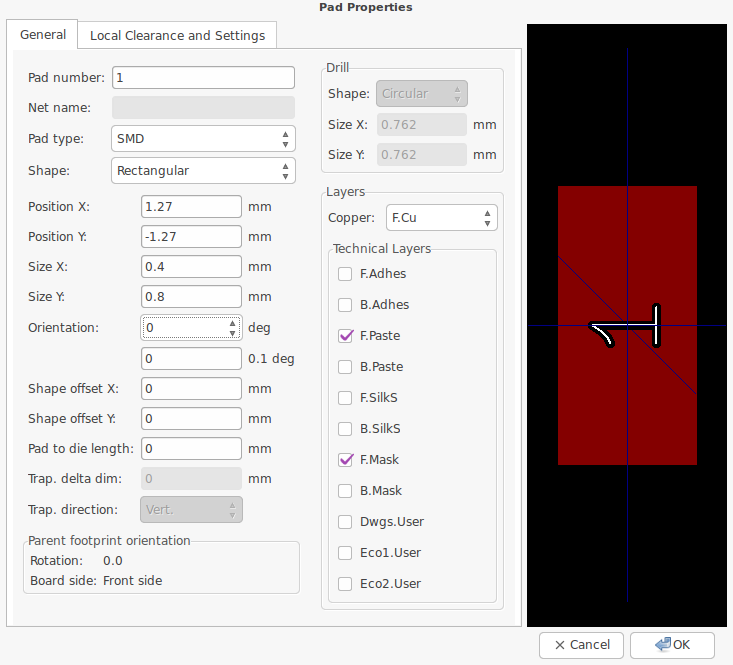

Prise en main rapide des principales fonctionnalités de KiCad pour la conception de circuits imprimés électroniques sophistiqués.
Copyright
Ce document est la propriété des contributeurs ci-dessous, copyright © 2010-2015. Vous pouvez le distribuer et/ou le modifier selon les termes de la GNU General Public License (http://www.gnu.org/licenses/gpl.html), version 3 ou ultérieure ou bien selon la licence Creative Commons Attribution (http://creativecommons.org/licenses/by/3.0/), version 3.0 ou ultérieure.
Toutes les marques apparaissant dans ce document appartiennent à leurs propriétaires respectifs.
Contributeurs
David Jahshan, Phil Hutchinson, Fabrizio Tappero, Christina Jarron, Melroy van den Berg, Marc Berlioux.
Traduction
Pierre Beneteau <pierre.beneteau@univ-lyon1.fr>, 2015. Martin d’Allens <martin.dallens@gmail.com>, 2015. Marc Berlioux <marc.berlioux@gmail.com>, 2015-2016.
Retours
Merci de signaler vos corrections de bugs, suggestions ou nouvelles versions ici :
-
Documentation de KiCad : https://github.com/KiCad/kicad-doc/issues
-
Bugs logiciel KiCad : https://bugs.launchpad.net/kicad
-
Traductions de KiCad : https://github.com/KiCad/kicad-i18n/issues
Date de publication
16 mai 2015.
1. Introduction à KiCad
KiCad est un logiciel open-source destiné à la création de schémas électroniques et de circuits imprimés. D’apparence monolithique, KiCad est en réalité composé de plusieurs logiciels spécifiques qui coopèrent :
| Nom du programme | Description | Extensions de fichiers |
|---|---|---|
KiCad |
Gestion du projet |
*.pro |
Eeschema |
Édition de schématique (schémas et symboles des composants) |
*.sch, *.lib, *.net |
CvPcb |
Association composants / empreintes |
*.net, *.cmp |
Pcbnew |
Édition de circuits imprimés |
*.kicad_pcb |
GerbView |
Visualisation des Gerber |
Extensions gerber usuelles |
Bitmap2Component |
Conversion d’images bitmap en symboles ou empreintes |
*.lib, *.kicad_mod, *.kicad_wks |
PCB Calculator |
Calcul pour composants, largeurs de pistes, isolation électrique, code couleur, etc. |
Aucun |
Pl Editor |
Édition de cartouche |
*.kicad_wks |
|
Note
|
La liste des extensions de fichiers n’est pas complète et ne contient que les fichiers caractéristiques de chaque application de la suite KiCad. |
KiCad peut être considéré comme suffisamment abouti pour servir à la conception et la maintenance de cartes électroniques complexes.
KiCad n’a aucune limitation de taille des circuits imprimés et peut facilement gérer jusqu'à 32 couches de cuivre, jusqu'à 14 couches techniques, et 4 couches auxiliaires. KiCad peut créer tous les fichiers nécessaires à la génération de cartes électroniques et notamment des fichiers Gerber pour photo-traceurs, des fichiers de perçage, des fichiers d’implantation des composants etc.
Étant open-source (licence GPL), KiCad est l’outil idéal pour la création de matériel électronique orienté open-source ou open-hardware.
Sur Internet, le site principal de KiCad est :
1.1. Téléchargez et installez KiCad
KiCad fonctionne sous GNU/Linux, Apple OS X et Windows. Vous pouvez trouver les instructions les plus à jour et des liens de téléchargement à :
|
Important
|
Des versions stables de KiCad apparaissent périodiquement suivant la Politique de versions stables de KiCad (en anglais). De nouvelles fonctionnalités sont ajoutées continuellement à la branche de développement. Si vous voulez profiter de ces nouveautés et contribuer ainsi à leur développement en les testant, téléchargez et utilisez la toute dernière "nightly build". Quoiqu’expérimentales, et pouvant présenter quelques bugs, l’objectif de notre équipe est de maintenir ces versions de développement aussi utilisables que possible. Les problèmes seront résolus d’autant plus rapidement qu’ils nous seront signalés. |
1.2. Sous GNU/Linux
Des versions stables de KiCad peuvent être trouvées dans la plupart des gestionnaires de distributions tels que kicad et kicad-doc. Si votre distribution ne fournit pas la dernière version stable, suivez les instructions pour les versions instables
Les versions dites instables sont construites à partir du code source le plus récent. Elles peuvent parfois présenter des erreurs à l’origine de corruption de fichiers, de mauvais fichiers Gerber, etc.., mais sont le plus souvent stables et possèdent les toutes dernières fonctionnalités.
Sous Ubuntu, la façon la plus facile d’installer une version instable de KiCad est de passer par les dépôts PPA et Aptitude. Tapez dans un terminal les commandes suivantes :
sudo add-apt-repository ppa:js-reynaud/ppa-kicad
sudo aptitude update && sudo aptitude safe-upgrade
sudo aptitude install kicad kicad-doc-fr kicad-locale-fr
Sous Fedora, la façon la plus facile d’installer une version instable de KiCad est de passer par copr. Pour installer KiCad en utilsant copr, tapez ce qui suit dans copr :
sudo dnf copr enable mangelajo/kicad
sudo dnf install kicad
Vous pouvez cependant télécharger et installer une version pré-compilée de KiCad ou bien télécharger le code source, le compiler et installer KiCad.
1.3. Sous Apple OS X
Des versions stables de KiCad pour OS X peuvent être trouvées ici : http://downloads.kicad-pcb.org/osx/stable/
Les versions dites instables sont construites à partir du code source le plus récent. Elles peuvent parfois présenter des erreurs à l’origine de corruption de fichiers, de mauvais fichiers Gerber, etc.., mais sont le plus souvent stables et possèdent les toutes dernières fonctionnalités.
Des versions instables (compilées quotidiennement) pour OS X peuvent être trouvées à : http://downloads.kicad-pcb.org/osx/
1.4. Sous Windows
Des versions stables de KiCad pour Windows peuvent être trouvées à : http://downloads.kicad-pcb.org/archive/
Les versions dites instables sont construites à partir du code source le plus récent. Elles peuvent parfois présenter des erreurs à l’origine de corruption de fichiers, de mauvais fichiers Gerber, etc.., mais sont le plus souvent stables et possèdent les toutes dernières fonctionnalités.
Des versions instables (compilées quotidiennement) pour Windows peuvent être trouvées à : http://downloads.kicad-pcb.org/windows/
1.5. Assistance
Si vous avez des idées, des remarques, des questions ou si vous avez besoin d’aide :
-
Visitez le Forum
-
Rejoignez le Canal IRC #kicad sur Freenode
-
Visionnez les Tutoriels
2. Echanges de données dans KiCad
En dépit de ses ressemblances avec d’autres logiciels de conception de circuits imprimés (PCB), KiCad se caractérise par une organisation dans laquelle symboles et empreintes de composants sont des entités disjointes. Cela fait fréquemment l’objet de discussions sur les forums internet.
2.1. Aperçu des échanges de données dans KiCad
Le travail avec KiCad s’organise en deux tâches principales : la réalisation du schéma et celle du typon. Une librairie de composants et une librairie d’empreintes sont nécessaires pour ces deux tâches. KiCad en fournit de nombreuses. Si celles-ci ne vous suffisaient pas, KiCad dispose également d’outils pour créer de nouveaux composants ou de nouvelles empreintes.
La figure ci-dessous représente comment le travail dans KiCad est organisé. Elle explique quelles sont les étapes à suivre et dans quel ordre. Les icônes correspondant aux étapes sont représentées quand c’est possible.

Pour plus d’informations sur la façon de créer un composant (symbole), voir la section de ce document intitulée Créer un symbole de composant avec KiCad. Et pour plus d’informations sur la façon de créer une nouvelle empreinte, voir la section intitulée Créer une empreinte de composant.
Sur le site suivant :
Vous trouverez un exemple d’un outil permettant de créer rapidement une librairie de symboles KiCad. Pour plus d’informations à propos de quicklib, voir la section de ce document intitulée Créer un symbole de composant avec QuickLib.
2.2. Annotations et rétro-annotations
Quand un schéma est terminé, l'étape suivante consiste à passer au typon en suivant les étapes décrites dans le diagramme ci-dessus. Une fois le typon commencé ou terminé, si des modifications sont nécessaires (ajout / suppression / remplacement de composants, de fils …), elles sont réalisées au moyen d’annotations (Forward Annotations) ou de rétro-annotations (Backward Annotations) pour conserver les correspondances entre schéma et typon.
La Rétro-Annotation (Backward Annotation) consiste à renvoyer un changement depuis le routage vers le schéma. Cette fonctionnalité n’est pas jugée utile par tous.
L’annotation (Forward Annotation) consiste à envoyer un changement du schéma vers le routage. C’est une fonctionnalité essentielle pour ne pas avoir à refaire entièrement le routage de votre carte chaque fois que vous souhaitez modifier votre schéma. L’annotation (Forward Annotation) est décrite dans la section intitulée Les Annotations dans KiCad.
3. Dessiner des schémas électroniques
Dans cette section, nous allons apprendre comment dessiner un schéma électronique avec KiCad.
3.1. Utiliser Eeschema
-
Sous Windows exécutez kicad.exe. Sous Linux tapez kicad dans votre Terminal. Vous êtes maintenant dans la fenêtre principale du gestionnaire de projet de KiCad. A partir de cette fenêtre, vous avez accès à huit outils indépendants : Eeschema, Editeur de Librairies, Pcbnew, Editeur d’empreintes PCB, GerbView, Bitmap2Component, PCB Calculator et Pl Editor. Référez-vous au diagramme précédent pour un aperçu de la façon d’utiliser ces différents outils.

-
Créez un nouveau projet : Fichier → Nouveau Projet → Nouveau Projet. Nommez ce fichier de projet tutorial1. Le fichier de projet prend automatiquement l’extension ".pro". KiCad propose de créer un répertoire dédié au projet. Cliquez sur "oui" pour confirmer. Tous les fichiers de votre projet y seront sauvegardés.
-
Commençons par créer un schéma. Lancer l'éditeur de schémas Eeschema
 . C’est le premier bouton à gauche.
. C’est le premier bouton à gauche.
-
Cliquer sur l’icône Ajustage opt Page
 sur la barre d’outils
située en haut. Définir le format de la page en A4 et entrer le titre
Tutoriel 1. Remarquez qu’il est possible de renseigner davantage le
cartouche si besoin. Cliquez sur OK. Les informations saisies apparaissent
maintenant dans le coin en bas à droite du cartouche. Utilisez la roulette
de la souris pour zoomer. Sauvez le projet : Fichier → Sauver le Projet
schématique.
sur la barre d’outils
située en haut. Définir le format de la page en A4 et entrer le titre
Tutoriel 1. Remarquez qu’il est possible de renseigner davantage le
cartouche si besoin. Cliquez sur OK. Les informations saisies apparaissent
maintenant dans le coin en bas à droite du cartouche. Utilisez la roulette
de la souris pour zoomer. Sauvez le projet : Fichier → Sauver le Projet
schématique.
-
Nous allons maintenant placer notre premier composant. Cliquez sur l’icône Placer un composant
 dans la barre d’outils de droite. La même fonctionnalité est
obtenue par le raccourci clavier Ajout Composant (a).
Note
dans la barre d’outils de droite. La même fonctionnalité est
obtenue par le raccourci clavier Ajout Composant (a).
NoteVous pouvez voir une liste de tous les raccourcis clavier en appuyant sur la touche ?. -
Cliquez au milieu de la feuille. Une fenêtre Sélection Composant apparaît à l'écran. Nous allons placer une résistance. Tapez le R de Resistor pour filtrer la recherche. Vous pouvez remarquer l’entête device au-dessus de Resistor. Cette entête device est le nom de la librairie à laquelle appartient ce composant. Cette librairie device est une librairie générique et pratique.
 -
Double cliquez sur la résistance. La fenêtre Sélection Composant se ferme. Cliquez à l’endroit de la feuille où vous souhaitez placer le composant.
-
Cliquez sur l’icône de loupe pour zoomer sur le composant, ou utilisez la molette de la souris. Un clic sur la molette (bouton central) permet de se déplacer horizontalement ou verticalement.
-
Essayez de survoler la résistance R avec la souris et appuyez sur la touche r du clavier. Le composant devrait tourner. Vous n’avez pas besoin de cliquer sur le composant pour le faire tourner.
NoteSi votre souris était aussi sur le champ Référence (R) ou le champ Valeur (R?), un menu doit apparaître. Ce menu Clarification de la Sélection, que vous verrez souvent dans KiCad, vous permet de travailler sur des éléments qui sont les uns au-dessus des autres, et de choisir sur lequel effectuer une action. Dans ce cas, informez KiCad que vous voulez effectuer l’action sur le Composant …R…. -
Faites un clic droit au milieu du composant et choisir Editer Composant → Valeur. Raccourci clavier : v. La touche e ouvre une fenêtre plus générale de Propriétés du Composant. Un clic droit fait apparaître le menu suivant avec pour chaque action son raccourci clavier.

-
La fenêtre "Édition Champ Valeur" apparaît. Remplacez la valeur courante de R par 1k.
NoteNe changez pas la référence (R?). Cela se fera automatiquement plus tard. La valeur de la résistance devrait maintenant être 1k. 
-
Pour placer une autre résistance, cliquez à l’endroit où vous souhaitez la voir apparaître. La fenêtre Sélection Composant apparaîtra à nouveau.
-
La résistance que vous avez choisi précédemment apparaît dorénavant dans la liste Historique. Cliquez sur R puis sur OK et placez le composant.

-
Si vous souhaitez supprimer un composant, placez le curseur de la souris au-dessus, faites un clic droit et choisissez Supprimer Composant ou bien appuyez sur la touche suppr.
NoteVous pouvez éditer les raccourcis clavier en allant dans le menu Préférences → Hotkeys → Editer hotkeys. Les modifications sont sauvegardées immédiatement. -
Si vous venez de poser un composant, vous pouvez en placer un autre identique immédiatement en appuyant sur la touche Ins .Vous pouvez également dupliquer un composant déjà présent sur la feuille en plaçant le curseur de la souris dessus et en utilisant la touche c. Placez ensuite le composant sur la feuille.
-
Faites un clic droit sur la deuxième résistance. Choisissez "Drag Composant". Déplacez le composant et faites un clic gauche pour le relâcher. La même action peut être faite en appuyant sur la touche g avec la souris sur le composant. Utilisez la touche "r" pour tourner le composant. Les touches x et y servent à faire une symétrie.
NoteClic Droit → Déplacer Composant (équivalent à la touche m) est une autre option pour déplacer les éléments, mais il vaut mieux ne s’en servir que pour les labels et les composants non connectés. Nous verrons plus tard pourquoi. -
Editez la valeur de la deuxième résistance avec le curseur au-dessus et la touche v. Remplacez R par 100. Vous pouvez annuler chacune de vos actions avec CTRL+Z.
-
Changer la taille de la grille. Vous avez probablement remarqué que tous les composants de la feuille schématique s’alignent sur une grille assez large. Vous pouvez changer le pas de la grille avec un clic droit → Sélection Grille. Il est généralement satisfaisant d’utiliser une grille de 50.0 mils pour les schémas.
-
Nous allons ajouter un composant à partir d’une librairie qui n’est pas configurée dans le projet par défaut. Dans le menu Préférences → Librairies de Composants, cliquez sur le bouton Ajouter de la zone Fichiers librairies de composants.
-
Vous devez trouver où sont installées les librairies officielles de KiCad sur votre ordinateur. Cherchez un répertoire library contenant une centaine de fichiers .dcm et .lib. Essayez dans C:\Program Files (x86)\KiCad\share\ (Windows) ou /usr/share/kicad/library/ (Linux). Lorsque vous avez trouvé le bon répertoire, choisissez d’ajouter la librairie microchip_pic12mcu et fermez la fenêtre.
-
Répétez l'étape d’ajout de composant, cette fois-ci en sélectionnant la librairie microchip_pic12mcu et en choisissant le composant PIC12C508A-I/SN.
-
Survolez le composant microcontrôleur avec la souris. Appuyez sur la touche Y ou X et constatez que le composant est retourné suivant l’axe X ou l’axe Y. Appuyez sur la même touche pour rétablir l’orientation d’origine.
-
Répétez les étapes d’ajout de composant et prenez le composant LED dans la librairie device.
-
Placez tous les composants de votre feuille comme ci-dessous.

-
Il s’agit maintenant de créer le composant schématique MYCONN3 pour notre connecteur à 3 pins. Vous pouvez sauter à la section Créer le symbole d’un composant avec KiCad pour apprendre à le créer à partir de zéro, puis revenir ici pour continuer la carte.
-
Vous pouvez désormais placer ce nouveau composant. Appuyez sur la touche a et prenez le composant MYCONN3 dans la librairie myLib .
-
La référence de composant J? devrait apparaître sous le label MYCONN3. Si vous voulez changer sa position, faites un clic droit sur J? et choisissez Déplacer Référence ou appuyez sur la touche M. Pensez à zoomer si besoin. Déplacez J? sous le composant comme sur l’image suivante. Les labels peuvent être déplacés autant de fois que nécessaire.

-
Il nous faut maintenant placer les symboles d’alimentation et de masse. Cliquez sur Placer un symbole type power
 dans la barre de droite, ou
bien appuyez sur la touche p. Dans la fenêtre Sélection Composant,
choisissez le symbole VCC à partir de la librairie power. Valider.
dans la barre de droite, ou
bien appuyez sur la touche p. Dans la fenêtre Sélection Composant,
choisissez le symbole VCC à partir de la librairie power. Valider.
-
Cliquez à proximité de la broche de la résistance de 1k pour placer VCC. Recommencez très rapidement la même opération pour la broche VDD du microcontrôleur ainsi que pour la broche VCC de MYCONN3 en utilisant le répertoire historique dans la fenêtre Sélection Composant.
-
Répétez les étapes précédentes en sélectionnant maintenant GND. Placez GND à proximité de MYCONN3 ainsi que de la broche VSS du microcontrôleur. Votre schéma devrait se présenter ainsi :
 -
Maintenant, nous allons relier tous nos compsants. Cliquez sur Placer un fil
 dans la barre d’outils de
droite.
Note
dans la barre d’outils de
droite.
NoteVeillez à ne pas choisir Placer un bus qui apparaît juste en dessous. L’icône représente un fil bleu plus épais. Les bus seront évoqués dans la section Connexions par bus avec KiCad. -
Cliquez sur le petit cercle situé à l’extrémité de la broche 7 du microcontrôleur puis sur le petit cercle de la broche 2 de la LED. N’hésitez pas à zoomer pendant cette opération.
NoteSi vous souhaitez repositionner des composants connectés par un ou plusieurs fils, il faut utiliser la touche g (drag) et non la touche m (déplacer). Sinon, les fils ne suivent pas le composant. Retournez à l'étape 24 si vous avez oublié comment déplacer un composant. 
-
Répétez cette opération et connectez tous les composants comme indiqué ci-dessous. Un double clic suffit pour terminer un fil. Pour relier les symboles VCC et GND, les fils doivent toucher le bas du symbole VCC et le milieu du symbole GND. Voir l’image ci-dessous.

-
Voyons maintenant une autre façon de réaliser une connexion en utilisant des étiquettes(labels). Cliquez sur l’icône Placer un nom de net - label local
 de la barre
d’outils de droite. Raccourci clavier : touche l.
de la barre
d’outils de droite. Raccourci clavier : touche l.
-
Cliquez sur le fil connecté à la broche 6 du microcontrôleur. Nommez ce label INPUT.
-
Procédez de la même façon pour placer un label à droite de la résistance de 100 Ohms. Nommez le également INPUT. Ces deux labels ayant le même nom, la broche 6 du microcontrôleur et la résistance de 100 Ohms sont maintenant reliées de manière invisible. C’est une technique très pratique quand les connexions sont nombreuses et que la présence de fils peut rendre la lecture du schéma difficile. Il n’est pas nécessaire d’avoir un fil pour placer un label. Vous pouvez attacher un label à une broche.
-
Les labels peuvent également être utilisés dans le but de renseigner le schéma. Placez un label sur la broche 7 du PIC. Entrez le nom uCtoLED. Nommez le fil entre le resistor et la LED LEDtoR. Nommez le fil entre MYCONN3 et le resistor INPUTtoR.
-
Il n’est pas nécessaire d'étiqueter les fils reliés à VCC et GND. En effet, les fils connectés aux symboles d’alimentations sont reliés automatiquement.
-
Votre schéma devrait maintenant ressembler à celui ci-dessous.

-
Intéressons-nous maintenant aux broches non connectées. Les broches ou fils qui ne sont pas connectés génèrent une mise en garde lors de la vérification par KiCad. Pour éviter ces messages de mise en garde, vous pouvez préciser que le choix de ne pas connecter les fils est délibéré ou bien indiquer manuellement chaque absence de connexion.
-
Cliquez sur l’icône Placer un symbole de non connexion
 de la barre d’outils de
droite. Cliquez sur les broches 2, 3, 4 et 5. Un X apparaît pour signifier
que l’absence de connexion est intentionnelle.
de la barre d’outils de
droite. Cliquez sur les broches 2, 3, 4 et 5. Un X apparaît pour signifier
que l’absence de connexion est intentionnelle.

-
Des composants ont des broches d’alimentation (power) qui sont invisibles. Vous pouvez les faire apparaître en cliquant sur l’icône Forcer affichage des pins visibles
 de la barre d’outils de
gauche. Les broches d’alimentation cachées sont connectées automatiquement à
VCC et GND si les noms correspondent. De manière générale, évitez de créer
des broches d’alimentation cachées.
de la barre d’outils de
gauche. Les broches d’alimentation cachées sont connectées automatiquement à
VCC et GND si les noms correspondent. De manière générale, évitez de créer
des broches d’alimentation cachées.
-
Il est maintenant nécessaire d’ajouter un Power Flag pour indiquer à KiCad d’où proviennent les alimentations. Appuyez sur la touche a, sélectionnez Liste tous, double-cliquez sur la librairie power et cherchez PWR_FLAG. Placez-en deux et connectez-les aux broches GND et VCC comme indiqué ci-dessous.
 Note
NoteCeci vous évitera l’avertissement classique lors de la vérification du schéma : Warning Pin power_in not driven (Net xx) -
Il est parfois utile d’ajouter des commentaires. Cliquez sur l’icône Placer des textes
 de la barre
d’outils de droite.
de la barre
d’outils de droite.
-
Tous les composants ont besoin maintenant d’avoir un identifiant unique. Pour l’instant, tous se nomment R? ou J?. L’assignation d’un identifiant peut se faire automatiquement en cliquant sur l’icône Annotation des composants de la schématique
 de la barre d’outils du haut.
de la barre d’outils du haut.
-
Dans la fenêtre Annotation de la schématique, sélectionnez Utiliser la schématique entière' et cliquez sur Numérotation. Cliquez sur OK pour confirmer le message qui apparaît. Remarquez que tous les ? ont été remplacés par des nombres. Chaque identifiant est maintenant unique. Dans notre exemple, ils ont été renommés R1, R2, U1, D1 et J1.
-
Vérifions maintenant l’absence d’erreurs dans notre schéma. Cliquez sur l’icône Exécuter le test des règles électriques
 de la barre d’outils du haut. Cliquez
sur Exécuter dans l’onglet ERC. Un rapport vous informe des erreurs ou des
avertissements (warnings) comme des fils non connectés par exemple. Vous
devriez avoir 0 erreurs et 0 warnings. Dans le cas contraire, une petite
flèche verte (ou marqueur) apparaîtra sur le schéma à l’endroit
correspondant à l’erreur ou à l’avertissement. Cochez la case Créer fichier
rapport ERC et cliquez à nouveau sur Exécuter pour obtenir un rapport
plus détaillé.
Note
de la barre d’outils du haut. Cliquez
sur Exécuter dans l’onglet ERC. Un rapport vous informe des erreurs ou des
avertissements (warnings) comme des fils non connectés par exemple. Vous
devriez avoir 0 erreurs et 0 warnings. Dans le cas contraire, une petite
flèche verte (ou marqueur) apparaîtra sur le schéma à l’endroit
correspondant à l’erreur ou à l’avertissement. Cochez la case Créer fichier
rapport ERC et cliquez à nouveau sur Exécuter pour obtenir un rapport
plus détaillé.
NoteSi vous avez un avertissement "Pas d'éditeur par défaut trouvé, vous devez en choisir un". Essayez c:\windows\notepad.exe (sous windows) ou /usr/bin/gedit (sous Linux). -
Le schéma est maintenant terminé. Nous allons maintenant créer un fichier Netliste auquel nous ajouterons les empreintes de chaque composant. Cliquez sur Génération de la Netliste
 de la barre d’outils du haut. Cliquez sur Générer puis sauvegardez sous le
nom proposé.
de la barre d’outils du haut. Cliquez sur Générer puis sauvegardez sous le
nom proposé.
-
Une fois le fichier de Netliste généré, cliquez sur l’icône Lancer CvPCB
 de la barre d’outils du haut. Si une
fenêtre indiquant que le fichier n’existe pas apparaît, ignorez-la en
cliquant sur OK.
de la barre d’outils du haut. Si une
fenêtre indiquant que le fichier n’existe pas apparaît, ignorez-la en
cliquant sur OK.
-
Cvpcb vous permet d’associer à chaque composant de votre schéma une empreinte d’une des librairies de KiCad. Plusieurs zones apparaissent. Dans celle du milieu sont listés tous les composants de votre schéma. Cliquez sur D1. Dans la zone de droite apparaissent toutes les empreintes disponibles. Sélectionnez LEDs:LED-5MM par un double-clic.
-
Il est possible que la zone de droite ne montre qu’une partie des empreintes disponibles. KiCad essaye de vous suggérer une sélection des empreintes qui semblent les mieux appropriées. Pour sélectionner ou déselectionner ces filtres, cliquez sur les icônes ,
 et
et
 .
.
-
Pour IC1 choisir l’empreinte Housings_DIP:DIP-8_W7.62mm. Pour J1 choisir l’empreinte Connect:Banana_Jack_3Pin . Pour R1 et R2 choisir l’empreinte Discret:R1.
-
Pour voir à quoi ressemblent les empreintes qui vous sont proposées, vous avez deux solutions. Vous pouvez cliquer sur Affichage empreinte sélectionnée
 pour
voir l’empreinte courante. Vous pouvez également cliquer sur Montrer
documentation des modules
pour
voir l’empreinte courante. Vous pouvez également cliquer sur Montrer
documentation des modules
 qui ouvre un document PDF de plusieurs pages dans lequel apparaissent toutes
les empreintes disponibles. Vous pouvez l’imprimer et vérifier ainsi que les
dimensions correspondent avec celles de votre composant.
qui ouvre un document PDF de plusieurs pages dans lequel apparaissent toutes
les empreintes disponibles. Vous pouvez l’imprimer et vérifier ainsi que les
dimensions correspondent avec celles de votre composant.
-
Une fois terminé, mettez à jour le fichier netliste avec les empreintes associées. Cliquez sur Fichier → Sauver édition. Le nom par défaut tutorial1.net convient. Cliquez sur Sauver. Vous pouvez également utiliser l’icône
 . Votre Netliste a
maintenant été mise à jour avec succès. Notez que s’il vous manque une
empreinte, il vous faudra la créer vous-même. Cela est expliqué un peu plus
loin dans ce document.
. Votre Netliste a
maintenant été mise à jour avec succès. Notez que s’il vous manque une
empreinte, il vous faudra la créer vous-même. Cela est expliqué un peu plus
loin dans ce document.
-
Vous pouvez fermer Cvpcb et retourner à l'éditeur de schématique Eeschema. Enregistrer le projet en cliquant sur Fichier → Sauver le projet schématique. Fermez l'éditeur de schématique.
-
Basculez vers le manager de projet KiCad.
-
Le fichier netliste décrit tous les composants ainsi que les connexions de leurs broches. C’est un fichier au format texte que vous pouvez facilement éditer.
NoteLes fichiers librairies (*.lib) sont également au format texte et facilement éditables. -
Pour créer une liste du matériel (Bill Of Materials : BOM), allez dans Eeschema et cliquez sur l’icône Génération de la liste des composants et/ou références croisées
 sur la barre
d’outils du haut. Il n’y a pas de plugin actif par défaut. Ajoutez-en un en
cliquant sur ajouter plugin. Sélectionnez le fichier *.xsl que vous
souhaitez utiliser. Dans cet exercice, nous choisissons bom2csv.xsl.
Note
sur la barre
d’outils du haut. Il n’y a pas de plugin actif par défaut. Ajoutez-en un en
cliquant sur ajouter plugin. Sélectionnez le fichier *.xsl que vous
souhaitez utiliser. Dans cet exercice, nous choisissons bom2csv.xsl.
NoteLe fichier *.xsl se trouve dans le répertoire d’installation de KiCad plugins qui se trouve à l’emplacement : /usr/lib/kicad/plugins/.
Obtenez également ce fichier en allant à :
wget https://raw.githubusercontent.com/KiCad/kicad-source-mirror/master/eeschema/plugins/bom2csv.xsl
KiCad génère automatiquement les commandes. Par exemple :xsltproc -o "%O" "/home/<user>/kicad/eeschema/plugins/bom2csv.xsl" "%I"
Si vous souhaitez ajouter l’extension, remplacer la commande par :xsltproc -o "%O.csv" "/home/<user>/kicad/eeschema/plugins/bom2csv.xsl" "%I"
Appuyer sur la touche d’aide pour avoir plus d’informations.
-
Appuyer sur Générer. Le fichier (qui porte le même nom que le projet) se trouve dans le répertoire du projet. Ouvrez le fichier *.csv avec LibreOffice Calc ou Excel. Une fenêtre d’import apparaît, appuyez sur OK.
Vous êtes maintenant prêt-e à passer à la partie circuit-imprimé (PCB) qui suit. Jetons auparavant un rapide coup d’oeil à la façon de connecter des broches en utilisant un bus.
3.2. Connexions par bus avec KiCad
Quelque fois vous pouvez avoir besoin de relier une rangée de broches d’un composant A vers celles d’un composant B. Dans ce cas, deux solutions possibles : utiliser les étiquettes (labels) comme nous l’avons déjà vu, ou utiliser des connexions de type bus. Voyons comment faire.
-
Supposons que nous ayons trois connecteurs de 4 broches à raccorder broche à broche. Avec l’outil label (appuyer sur l), étiquetons la broche 4 du connecteur P4. Appelons-la a1. Puis appuyons sur la touche Ins pour avoir la même chose ajoutée automatiquement sur la broche au-dessous de la broche 4 (broche 3). Remarquez que l'étiquette sera automatiquement nommée a2.
-
Appuyez encore deux fois sur la touche Ins. Cette touche correspond à l’action Répéter la dernière opération, une commande très utile qui vous rendra la vie bien plus facile.
-
Répéter la même opération d'étiquetage sur les connecteurs CONN_2 et CONN_3 et vous aurez fini. Si vous continuez et fabriquez un circuit-imprimé, vous verrez que les trois connecteurs sont reliés. la Figure 2 montre le résultat de cette opération. Pour l’esthétique, on utilisera le bouton
 pour placer des entrées de bus de type fil vers bus et des lignes de
bus en utilisant le bouton
pour placer des entrées de bus de type fil vers bus et des lignes de
bus en utilisant le bouton
 , comme indiqué Figure 3. Notez toutefois
que ça n’aura pas d’impact sur le circuit-imprimé.
, comme indiqué Figure 3. Notez toutefois
que ça n’aura pas d’impact sur le circuit-imprimé.
-
Il est à noter que les petits fils attachés aux broches en Figure 2 ne sont pas strictement nécessaires. En fait, les étiquettes peuvent être posées directement sur les broches.
-
Supposons maintenant que nous ayons un quatrième connecteur nommé CONN_4, et dont les labels sont légèrement différentes(b1,b2,b3,b4). Nous voulons maintenant raccorder le Bus a au Bus b broche à broche. Nous voulons faire ça sans utiliser de labels sur les broches (ce qui est aussi possible) mais plutôt en utilisant un étiquetage sur la ligne de bus, avec un label par bus.
-
Raccordez et étiquetez CONN_4 en utilisant la méthode décrite précédemment. Nommez les broches b1,b2,b3 et b4. Connectez ces broches à une série de d’entrées Fil vers bus avec le bouton
et à une ligne de bus
avec le bouton
 . Voir Figure 4.
. Voir Figure 4.
-
Placez une label (touche l) sur le bus de CONN_4 et appelez le b[1..4].
-
Placez une label (touche l) sur le précédent bus a et appelez le a[1..4].
-
Nous pouvons maintenant raccorder le bus a[1..4] avec le bus b[1..4] en utilisant une ligne de bus au moyen du bouton
.
-
En raccordant les deux bus ensemble, la broche a1 sera automatiquement connectée à la broche b1, a2 à b2, et ainsi de suite. Voir en Figure 4 le résultat final.
NoteL’action Répéter la dernière opération accessible par la touche Ins peut être avantageusement utilisée pour effectuer des insertions d’objets répétées. Par exemple, les petits fils connectés aux broches en Figure 2, Figure 3 et Figure 4 ont été placés par cette méthode. -
L’action Répéter la dernière opération accessible par la touche Ins a aussi été utilisée intensivement pour placer les différentes séries d’entrées Fil vers bus en utilisant le bouton
.

4. Router le circuit imprimé (PCB)
Nous allons maintenant utiliser la netliste générée précédemment pour router le PCB avec PCBnew.
4.1. Utiliser Pcbnew
-
A partir du gestionnaire de projet, cliquez sur l’icône Pcbnew - Editeur de CI
 . Une fenêtre Pcbnew
s’ouvre. Si un message d’erreur apparaît disant que le fichier *.kicad_pcb
n’existe pas et vous demande si vous souhaitez le créer, cliquez sur Oui.
. Une fenêtre Pcbnew
s’ouvre. Si un message d’erreur apparaît disant que le fichier *.kicad_pcb
n’existe pas et vous demande si vous souhaitez le créer, cliquez sur Oui.
-
Commencez par saisir des informations sur la feuille. Cliquez sur l’icône Ajustage de la feuille de dessin (dimensions et textes)
sur la barre d’outils du
haut. Définir la Taille de la page en A4 et saisissez dans titre :
Tutoriel1.
-
C’est une bonne idée de commencer par configurer l’isolation et la largeur de piste minimale aux valeurs requises par votre fabricant de PCB. Vous pouvez généralement configurer l’isolation à 0.25 et la largeur de piste minimale à 0.25. Cliquez sur le menu Règles de conception → Règles de conception. S’il n’apparaît pas déjà, cliquez sur l’onglet Editeur de NetClasses. Dans les champs en haut de la fenêtre, modifiez l'Isolation par 0.25 et la largeur de piste par 0.25 comme indiqué ci-après. Les mesures sont en mm.

-
Cliquez sur l’onglet Règles générales et définir Largeur Min Piste à 0.25. Valider ces changements en cliquant sur OK.
-
Nous allons maintenant importer la netliste. Cliquez sur l’icône Lire Netliste
dans la barre d’outils
du haut. Cliquez sur le bouton Examiner, sélectionnez tutorial1.net et
cliquez sur Lire Netliste Courante. Cliquer sur Fermer pour terminer.
-
Tous les composants doivent maintenant apparaître dans le coin en haut à gauche, juste au-dessus du cartouche. Utilisez la molette si vous ne les voyez pas.
-
Sélectionnez tous les composants à l’aide de la souris et placez les au milieu de la carte. Vous pouvez utilisez la molette de la souris pendant le déplacement des composants.
-
Tous les composants sont reliés par des fils fins appelés chevelu. Assurez-vous que le bouton Ne pas montrer le chevelu général
 est
appuyé. Vous pouvez alors voir le chevelu reliant tous les composants entre
eux.
Note
est
appuyé. Vous pouvez alors voir le chevelu reliant tous les composants entre
eux.
NoteL’infobulle du bouton indique quelle action sera obtenue après avoir cliqué dessus. -
Vous pouvez déplacer chaque composant en le survolant et en appuyant sur la touche g. Cliquez ensuite à l’endroit où vous souhaitez les placer. Déplacer les composants jusqu'à ce vous ayez minimisé le nombre de croisements des fils.
NoteSi à la place d’utiliser la commande Drag (touche g) vous utilisez la commande Déplacer (touche m), vous vous rendrez compte par la suite que les connexions sont alors perdues (comme dans Eeschema). Dans les lignes qui suivent, nous utiliserons systématiquement la touche g. 
-
Si le chevelu disparaît ou que l'écran devient brouillon, faites un clic-droit et cliquez sur Rafraîchir l'écran. Remarquez qu’une des broches des la résistance de 100 ohms est connectée à la broche 6 du composant PIC. Ceci est le résultat de la méthode de connexion des pins à l’aide des Labels. Les Labels sont souvent préférés aux fils car ils permettent de rendre le schéma plus lisible.
-
Définissons maintenant le contour du PCB. Sélectionnez la couche Edge.Cuts à partir du menu déroulant dans la barre d’outils du haut. Cliquez sur l’icône Edition de lignes ou de polygones graphiques
 de la barre
d’outils de droite. Tracer le contour de la carte en cliquant à chacun des
coins.
de la barre
d’outils de droite. Tracer le contour de la carte en cliquant à chacun des
coins.
-
Nous allons par la suite connecter tous les fils à l’exception de GND. Nous réaliserons la connexion de tous les GND en une seule fois en utilisant un plan de masse sur la partie cuivre située sous la carte (appelée B.Cu).
-
Choisissons maintenant la couche de cuivre sur laquelle nous souhaitons travailler. Sélectionnez la couche F.Cu (PgUp) dans le menu déroulant de la barre d’outils du haut. C’est la couche de cuivre du dessus du PCB.

-
Si vous décidez, par exemple, de faire un PCB de 4 couches, allez dans Règjes de conception → Options couches et remplacez la valeur du champ Couches Cuivre par 4. Vous pouvez nommer les couches dans le tableau et définir leur usage. Notez qu’il y a des préconfigurations très utiles qui peuvent être sélectionnées à l’aide du menu Groupes Prédéterminés de Couches.
-
Cliquez sur l’icône Ajouter pistes et vias
 de la barre d’outils de
droite. Cliquez sur la broche 1 de J1 et prolongez la piste jusqu'à la
pastille de R2. Faites un double-clic à l’endroit où la piste se
termine. L'épaisseur de cette piste est celle définie par défaut : 0.250
mm. Vous pouvez changer l'épaisseur de piste à partir du menu déroulant dans
la barre d’outils du haut. Une seule largeur de piste est disponible parce
que nous n’en avons précédemment défini qu’une.

de la barre d’outils de
droite. Cliquez sur la broche 1 de J1 et prolongez la piste jusqu'à la
pastille de R2. Faites un double-clic à l’endroit où la piste se
termine. L'épaisseur de cette piste est celle définie par défaut : 0.250
mm. Vous pouvez changer l'épaisseur de piste à partir du menu déroulant dans
la barre d’outils du haut. Une seule largeur de piste est disponible parce
que nous n’en avons précédemment défini qu’une.
 -
Si vous souhaitez ajouter davantage de largeurs de pistes, allez jusqu'à l’onglet : Règles de conception → Règles de conception → Règles générales. Ajoutez, dans le quart inférieur droit de cette fenêtre, les autres largeurs que vous souhaitez voir apparaître. Vous les verrez ensuite apparaître dans le menu déroulant pendant que vous routez votre carte. Voir l’exemple ci-dessous (en pouces ou inches).

-
Une autre méthode consiste à ajouter une NetClasse pour laquelle vous spécifiez certaines options. Allez dans Règles de conception → Règles de conception → Editeur de NetClasss et ajouter une nouvelle classe appelée power. Remplacez l'épaisseur de piste de 8 mil (noté 0.0080) par 24 mil (notée 0.0240). Ajoutez ensuite tout sauf la masse à la classe power (sélectionnez défaut à gauche et power à droite puis utilisez les flèches).
-
Si vous souhaitez changer le pas de la grille, clic-droit → Sélection Grille. Assurez-vous d’avoir choisi le pas de grille approprié avant ou après le placement des composants et la réalisation des pistes.
-
Répétez cette opération jusqu'à ce que tous les fils, à l’exception de la broche 3 de J1, soient connectés. Votre carte devrait ressembler à l’exemple ci-dessous.

-
Dessinons maintenant une piste sur l’autre face de cuivre du PCB. Sélectionnez B.Cu dans le menu déroulant de la barre d’outils du haut. Cliquez sur l’icône ajouter pistes et vias. Dessinez une piste entre la broche 3 de J1 et la broche 8 de U1. Cette connexion n’est pas nécessaire puisque que nous pourrions la réaliser avec le plan de masse. Observez le changement de couleur de la piste.
-
Aller de la broche A à la broche B en changeant de couche. Il est possible de changer de couche de cuivre pendant que vous tracez une piste en plaçant un via. Pendant que vous tracez une piste sur la couche de cuivre du dessus faites un clic-droit et choisissez Placer Via Traversante ou la touche v. Vous vous trouvez alors sur la couche de dessous où vous pouvez poursuivre le tracé de la piste.

-
Si vous voulez inspecter une connexion, vous pouvez cliquer sur l’icône Surbrillance Net
 sur la barre d’outils de droite. Cliquez sur la broche 3 de J1. La piste et
toutes les pastilles connectées devraient apparaître en surbrillance.
sur la barre d’outils de droite. Cliquez sur la broche 3 de J1. La piste et
toutes les pastilles connectées devraient apparaître en surbrillance.
-
Nous allons maintenant réaliser un plan de masse qui sera conneté à toutes les broches reliées à GND. Cliquez sur l’icône Addition de zones remplies
 sur la barre d’outils de
droite. Nous allons tracer un rectangle autour de la carte. Cliquez à
l’endroit où vous souhaitez placer un coin de ce rectangle. Dans la boîte de
dialogue qui apparaît, configurez la Connexion des pads en frein
thermique et la Direction des contours en H/V et 45 deg
seulement. Validez.
sur la barre d’outils de
droite. Nous allons tracer un rectangle autour de la carte. Cliquez à
l’endroit où vous souhaitez placer un coin de ce rectangle. Dans la boîte de
dialogue qui apparaît, configurez la Connexion des pads en frein
thermique et la Direction des contours en H/V et 45 deg
seulement. Validez.
-
Tracez le rectangle en suivant le contour de la carte en cliquant à chacun de ses coins. Faites un double-clic pour terminer le rectangle. Faites un clic-droit sur le contour que vous venez de tracer (appuyez sur la touche Echap et recommencez si la commande Zones n’apparaît pas. Cliquez alors sur Contour de Zone ). Cliquez sur Zones → Remplir zone. La carte devrait se remplir de vert et ressemblez à ceci :

-
Lancer la vérification des règles de conception en cliquant sur l’icône Exécuter la vérification des règles de conception
 dans la barre d’outils du haut. Cliquez
sur Démarrer DRC. Il ne devrait pas y avoir d’erreur. Cliquez sur Liste
Non Conn. Il ne devrait pas y avoir de pistes non connectées. Cliquez sur
OK pour fermer la boîte de dialogue.
dans la barre d’outils du haut. Cliquez
sur Démarrer DRC. Il ne devrait pas y avoir d’erreur. Cliquez sur Liste
Non Conn. Il ne devrait pas y avoir de pistes non connectées. Cliquez sur
OK pour fermer la boîte de dialogue.
-
Enregistrez votre fichier en cliquant sur Fichiers → Sauver. Pour admirer votre carte en 3D, cliquez sur Affichage → 3D Visualisateur.

-
Pour faire tourner le PCB, maintenez le bouton gauche de la souris appuyé puis la déplacer.
-
Votre carte est terminée. Pour l’envoyer à votre fabricant de PCB, il vous faudra générer les fichiers Gerber.
4.2. Générer les fichiers Gerber
Une fois que votre PCB est complet, vous pouvez générer des fichiers Gerber pour chaque couche et les envoyer à votre fabricant de PCB favori qui fabriquera la carte pour vous.
-
A partir de KiCad, ouvrez Pcbnew et chargez le fichier de votre carte.
-
Cliquez sur Fichier →Tracer. Sélectionnez Gerber dans Format de tracé et sélectionnez le dossier dans lequel les fichiers Gerber seront déposés. Cliquez sur le bouton Tracer pour l’exécution.
-
Voici les couches que vous avez typiquement besoin de sélectionner pour fabriquer un PCB double-face :
| Couche | Nom de la couche KiCad | Ancien nom couche KiCad | Extension Gerber par Défaut | "Utiliser extensions Gerber Protel" cochée |
|---|---|---|---|---|
Couche inférieure |
B.Cu |
Cuivre |
.GBR |
.GBL |
Couche supérieure |
F.Cu |
Composants |
.GBR |
.GTL |
Sérigraphie supérieure |
F.SilkS |
Sérigr._Composants |
.GBR |
.GTO |
Vernis épargne dessous |
B.Mask |
Masque_dessous |
.GBR |
.GBS |
Vernis épargne dessus |
F.Mask |
Masque_dessus |
.GBR |
.GTS |
Contour Circuit |
Edge.Cuts |
Contour_PCB |
.GBR |
.GM1 |
4.3. Utiliser GerbView
-
Pour voir les fichiers Gerber, allez dans le gestionnaire de projet KiCad et cliquez sur l’icône GerbView. Sélectionnez Couche 1 dans le menu déroulant. Cliquez su Fichiers → Charger Fichier Gerber ou cliquez sur l’icône
 . Chargez tous
les fichiers Gerber un par un. Remarquez comme ils apparaissent les uns
au-dessus des autres.
. Chargez tous
les fichiers Gerber un par un. Remarquez comme ils apparaissent les uns
au-dessus des autres.
-
Utilisez le menu à droite pour activer/désactiver les couches visibles. Inspectez minutieusement chaque couche avant de lancer la production.
-
Pour générer le fichier de perçage, utilisez à nouveau la commande Fichier →Tracer dans Pcbnew, bouton Créer un fichier de perçage. Les réglages par défaut devraient être satisfaisants.
4.4. Routage automatique avec FreeRouter
Le routage à la main est rapide et amusant, mais, pour un circuit avec beaucoup de composants, vous pouvez avoir envie d’utiliser le routage automatique. Rappelez vous qu’il est préférable de router d’abord à la main les pistes les plus critiques et laisser ensuite l’autorouteur faire la partie la plus ennuyeuse. Il ne s’occupera que des pistes non déjà raccordées. L’autorouteur que nous allons utiliser est FreeRouter du site freerouting.net.
|
Note
|
FreeRouter est une application Java open-source que vous devez compiler vous-même pour l’utiliser avec Kicad. Le code source est disponible sur le site : https://github.com/nikropht/FreeRouting |
-
Dans Pcbnew, cliquez sur Fichier → Export → Specctra DSN ou cliquez sur Outils → FreeRoute → Exporter un fichier de conception Specctra (*.dsn) et enregistrez le fichier. Lancez FreeRouter et cliquez sur le bouton Open Your Own Design, retrouvez votre fichier dsn et chargez le.
NoteLa boite de dialogue Outils → FreeRoute possède un joli bouton aide qui ouvre un visualisateur de fichier avec un petit document nommé Freerouter Guidelines. Suivez ce guide pour utiliser FreeRoute efficacement. -
FreeRouter a quelques fonctionnalités que Kicad ne possède pas, que ce soit pour le routage manuel ou pour le routage automatique. FreeRouter opère en deux étapes principales : d’abord, il route le circuit, ensuite il l’optimise. L’optimisation complète peut prendre beaucoup de temps, toutefois, vous pouvez l’arrêtez à tout moment au cas où.
-
Vous pouvez lancer le routage automatique en cliquant sur le bouton Autorouter de la barre du haut. La barre du bas vous informe de l’avancement du processus de routage. Si le compteur de passes dépasse 30, votre carte ne peut probablement pas être auto-routée avec ce routeur. Écartez un peu plus vos composants ou tournez les un peu mieux et recommencez. Le but de ces rotations ou déplacements est de réduire le nombre de lignes croisées dans le chevelu.
-
Un click gauche de la souris permet d’interrompre le routage automatique et de démarrer automatiquement le processus d’optimisation. Un autre click gauche interrompra le processus d’optimisation. À moins que vous n’ayez vraiment besoin de l’arrêter, il est préférable de laisser FreeRouter finir son travail.
-
Cliquez sur le menu Fichier → Export Specctra Session File et sauvez le fichier de votre circuit avec l’extension .ses. Vous n’avez pas vraiment besoin de sauver le fichiers de règles de FreeRouter.
-
Revenez dans Pcbnew. Vous pouvez importer votre circuit fraîchement routé en cliquant sur le lien Outils → FreeRoute puis sur le bouton Importer un fichier Spectra Session (.ses) et sélectionnez votre fichier .ses.
Si une des pistes routées ne vous convient pas, vous pouvez la détruire en
utilisant la touche Suppr (ou Del) et la re-router à nouveau avec l’outil de
routage Ajouter Pistes et Vias
 de la barre d’outils de droite.
de la barre d’outils de droite.
5. Les Annotations dans KiCad
Une fois terminé votre schéma électronique, l’assignation des empreintes, le routage de la carte et généré les fichiers Gerber, vous êtes maintenant prêts à envoyer le tout à un fabricant de circuits imprimés pour que votre circuit devienne réalité.
Souvent, ce processus linéaire s’avère ne pas être aussi uni-directionnel. Par exemple quand vous avez modifié ou agrandi un circuit pour lequel, vous ou un autre avait déjà terminé le processus. Il est possible que vous ayez besoin de déplacer des composants, d’en remplacer, de changer d’empreintes ou plus encore. Pendant cette phase de modification, ce que vous ne voulez pas, c’est d’avoir à rerouter le circuit entier. Voici comment procéder :
-
Supposons que vous vouliez remplacer un connecteur hypothétique CON1 avec CON2.
-
Vous avez déjà terminé le schéma et routé le circuit.
-
Depuis KiCad, lancez Eeschema, faites vos modifications en supprimant CON1 et en ajoutant CON2. Enregistrez votre projet schématique avec l’icône
et cliquez sur
l’icône Génération de la netliste
de la barre d’outils du haut.
-
Cliquez sur Générer puis sur Enregistrer. Conservez le nom par défaut et écrasez l’ancien fichier.
-
Associons maintenant une empreinte à CON2. Cliquez sur l’icône Lancer CvPcb
de la barre d’outils du
haut. Associez l’empreinte au nouveau composant CON2. Le reste des
composants doivent avoir conservé leurs précédentes empreintes
associées. Fermez CvPcb.
-
Revenez dans EESchema, enregistrez votre projet schématique par le menu Fichier → Sauvez le projet schématique, puis fermez EESchema.
-
Depuis le gestionnaire de projets de KiCad, lancez Pcbnew. La fenêtre Pcbnew doit s’ouvrir.
-
L’ancien circuit, déjà routé, doit s’ouvrir automatiquement. Importons la nouvelle Netliste. Cliquez sur l’icône Lire Netliste
de la barre d’outils du haut.
-
Cliquez sur le bouton Examiner, sélectionnez le fichier de netliste dans la boite de dialogue, et cliquez sur le bouton Lire Netliste Courante. Puis cliquez sur le bouton Fermer.
-
Vous devez voir maintenant votre circuit avec les composants précédents déjà routés et, dans le coin en haut à gauche, les composants non-routés. Dans notre cas le CON2. Sélectionnez CON2 à la souris et déplacez le sur le circuit.
-
Placez CON2 et routez-le. Ceci terminé, sauvez et procédez à la génération des fichiers Gerber comme précédemment.
Le processus décrit ici peut être répété autant de fois que nécessaire. En plus de l’annotation vers l’avant (Forward Annotation), il existe une autre méthode connue sous le nom de Rétro-Annotation (Backward Annotation). Cette méthode vous permet de faire des modifications dans Pcbnew et de mettre à jour votre schéma et le fichier netliste à partir de ces modifications. Cette méthode de Rétro Annotation n’est toutefois pas très utile et n’est pas décrite ici.
6. Créer un symbole de composant avec KiCad
Le composant que vous voulez placer sur votre schéma n’est parfois pas dans les librairies KiCad. C’est relativement normal et il n’y a pas de raison de s’en inquiéter. Nous allons voir dans cette section comment créer rapidement un nouveau symbole de composant avec KiCad.
Dans KiCad, un composant est un morceau de texte qui commence par DEF et termine par ENDDEF. Un ou plusieurs composants sont normalement présents dans un fichier librairie qui porte l’extension .lib. Si vous voulez ajouter des composants à un fichier librairie, vous pouvez simplement utiliser les commandes copier et coller.
6.1. Utiliser l’Editeur des Librairies Schématiques
-
Nous pouvons utiliser l'Editeur des Librairies Schématiques (qui fait partie Eeschema) pour dessiner de nouveau composants. Créons un répertoire nommé librairie dans notre répertoire de projet tutorial1. Nous y déposerons notre nouveau fichier librairie myLib.lib dès que nous aurons créé notre nouveau composant.
-
Nous pouvons maintenant commencer à créer notre nouveau composant. Depuis KiCad, lancez Eeschema, cliquez sur l’icône Editeur de Librairies
 puis sur l’icône Créer un
nouveau composant
puis sur l’icône Créer un
nouveau composant
 . La fenêtre
Propriétés du composant apparaît. Nommez le nouveau composant MYCONN3,
choisir J comme référence par défaut et 1 comme Nombre d’unités par
boîtiers . Cliquez sur OK. Si une mise en garde apparaît, appuyez sur
oui. Le composant n’est pour l’instant constitué que d'étiquettes. Ajoutons
des broches. Cliquez sur l’icône Ajouter des pins au composant
. La fenêtre
Propriétés du composant apparaît. Nommez le nouveau composant MYCONN3,
choisir J comme référence par défaut et 1 comme Nombre d’unités par
boîtiers . Cliquez sur OK. Si une mise en garde apparaît, appuyez sur
oui. Le composant n’est pour l’instant constitué que d'étiquettes. Ajoutons
des broches. Cliquez sur l’icône Ajouter des pins au composant
 de la barre d’outils de droite. Pour
placer la broche, faites un clic au centre de la feuille, juste en dessous
de l'étiquette MYCONN3.
de la barre d’outils de droite. Pour
placer la broche, faites un clic au centre de la feuille, juste en dessous
de l'étiquette MYCONN3.
-
Dans la fenêtre Propriétés des pins qui apparaît, affectez VCC à Nom pin, 1 à Numéro de pin et Passive à Type électrique. Cliquez ensuite sur OK.

-
Placez la broche en cliquant à l’endroit où vous souhaitez qu’elle apparaisse, à droite et en dessous de l'étiquette MYCONN3.
-
Répétez les étapes précédentes en affectant cette fois INPUT à Nom pin, 2 à Numéro de pin et Passive à type électrique.
-
Répétez les étapes précédentes en affectant cette fois GND à Nom pin, 3 à Numéro de pin et Passive à type électrique. Alignez et ordonnez les broches. L'étiquette du composant MYCONN3 devrait être au milieu de la page (à l’intersection des lignes bleues).
-
Dessinez ensuite le contour du composant. Cliquez sur l’icône Ajouter des rectangles graphiques
 . Nous voulons
dessiner un rectangle à côté des pins comme représenté ci-dessous. Pour ce
faire, cliquez à l’endroit où vous souhaitez placer le coin supérieur gauche
du rectangle (ne gardez pas le bouton enfoncé). Cliquez à nouveau à
l’endroit où vous souhaitez placer le coin inférieur droit.
. Nous voulons
dessiner un rectangle à côté des pins comme représenté ci-dessous. Pour ce
faire, cliquez à l’endroit où vous souhaitez placer le coin supérieur gauche
du rectangle (ne gardez pas le bouton enfoncé). Cliquez à nouveau à
l’endroit où vous souhaitez placer le coin inférieur droit.

-
If you want to fill the rectangle with yellow, set the fill colour to yellow 4 in Preferences → Select color scheme, then select the rectangle in the editing screen and edit (E), selecting Fill background.
-
Cliquez sur l’icône Sauver le composant courant dans une nouvelle librairie
 , naviguez
jusqu’au répertoire tutorial1/librairie et sauvez la nouvelle librairie en
lui donnant le nom myLib.lib.
, naviguez
jusqu’au répertoire tutorial1/librairie et sauvez la nouvelle librairie en
lui donnant le nom myLib.lib.
-
Allez dans Préférences → Librairies de Composants et ajoutez à la fois tutorial1/librairie/ dans Chemin de recherche défini par l’utilisateur et myLib.lib dans Fichiers Librairies de Composants.
-
Cliquez sur l’icône Sélection de la librairie de travail
 . Cliquez sur myLib dans la
fenêtre Sélection Librairie et cliquez sur OK. Observez que la barre de
titre de la fenêtre indique la librairie en cours d’utilisation, qui devrait
être maintenant myLib.
. Cliquez sur myLib dans la
fenêtre Sélection Librairie et cliquez sur OK. Observez que la barre de
titre de la fenêtre indique la librairie en cours d’utilisation, qui devrait
être maintenant myLib.
-
Cliquez sur l’icône Mettre à jour le composant courant en librairie de travail
 dans la barre
d’outils du haut. Cliquez sur Oui si un message de confirmation
apparaît. Le nouveau composant schématique (symbole) est maintenant réalisé
et disponible à partir de la librairie indiquée dans la barre de titre de la
fenêtre.
dans la barre
d’outils du haut. Cliquez sur Oui si un message de confirmation
apparaît. Le nouveau composant schématique (symbole) est maintenant réalisé
et disponible à partir de la librairie indiquée dans la barre de titre de la
fenêtre.
-
Vous pouvez maintenant fermer l’Editeur de composants. Vous allez retourner dans la fenêtre de l'éditeur de schéma. Votre nouveau composant sera maintenant disponible à partir de la librairie myLib.
-
Vous pouvez rendre accessible n’importe quel fichier librairie file.lib en l’ajoutant au chemin d’accès aux librairies. Dans Eeschema, allez dans Préférences → Librairies de Composants et ajoutez à la fois son chemin d’accès dans Chemin de recherche défini par l’utilisateur et file.lib dans Fichiers Librairies de Composants.
6.2. Exporter, Importer et modifier une librairie
Au lieu de créer un composant en librairie à partir de rien, il est quelquefois plus rapide de partir d’un composant déjà fait et de le modifier. Dans cette section nous verrons comment exporter un composant depuis la librairie standard device de Kicad vers notre propre librairie myOwnLib.lib et ensuite le modifier.
-
Depuis Kicad, lancez Eeschema, puis cliquez sur l’icône Editeur de Librairie
, cliquez sur l’icône
Sélection de la librairie de travail
et choisissez la librairie
device. Cliquez sur l’icône Chargez un composant à éditer à partir de la
librairie courante
 et
importez RELAY_2RT.
et
importez RELAY_2RT.
-
Cliquez sur l’icône Exporter composant icon
 , naviguez dans le dossier
library/ et sauvez la nouvelle librairie sous le nom myOwnLib.lib.
, naviguez dans le dossier
library/ et sauvez la nouvelle librairie sous le nom myOwnLib.lib.
-
You can make this component and the whole library myOwnLib.lib available to you by adding it to the library path. From Eeschema, go to Preferences → Component Libraries and add both library/ in User defined search path and myOwnLib.lib in the Component library files. Close the window.
-
Cliquez sur l’icône Sélection de la librairie de travail
. Cliquez sur _myOwnLib dans la
fenêtre Sélection Librairie et cliquez sur OK. Observez que la barre de
titre de la fenêtre indique la librairie en cours d’utilisation, qui devrait
être maintenant myOwnLib.
-
Cliquez sur l’icône Chargez un composant à éditer à partir de la librairie courante
et
importez RELAY_2RT.
-
Vous pouvez maintenant modifier votre composant à votre aise. Survolez l'étiquette RELAY_2RT, appuyez sur la touche e et renommez la MY_RELAY_2RT.
-
Cliquez sur l’icône Mettre à jour le composant courant en librairie de travail
 de la
barre d’outils du haut. Sauvez tous les changements en cliquant sur l’icône
Sauvez la librairie courante sur disque
de la barre d’outils
du haut.
de la
barre d’outils du haut. Sauvez tous les changements en cliquant sur l’icône
Sauvez la librairie courante sur disque
de la barre d’outils
du haut.
6.3. Créer un symbole de composant avec QuickLib
Cette section montre une façon différente de créer rapidement un symbole schématique pour MYCONN3 (voir MYCONN3 au-dessus) en utilisant l’outil en ligne quicklib.
-
Rendez-vous sur la page web de quicklib : http://kicad.rohrbacher.net/quicklib.php
-
Remplissez la page avec les informations suivantes : Component name: MYCONN3, Reference Prefix: J, Pin Layout Style: SIL, Pin Count N: 3
-
Cliquez sur l’icône Assign Pins. Remplissez la page avec les noms suivants, champ Name : Pin 1: VCC, Pin 2: input, Pin 3: GND. et Type : Passive pour les 3 pins.
-
Cliquez sur l’icône Preview it et si cela vous convient, cliquez sur Build Library Component. Téléchargez le fichier et renommez le tutorial1/library/myQuickLib.lib.. C’est terminé !
-
Faisons le apparaître dans Kicad. Depuis le Gestionnaire de Projets de Kicad, lancez Eeschema, cliquez sur l’icône Editeur de Librairies
, cliquez sur l’icône Importer
Composant
 , naviguez jusqu'à
tutorial1/library/ et choisissez myQuickLib.lib.
, naviguez jusqu'à
tutorial1/library/ et choisissez myQuickLib.lib.

-
Vous pouvez rendre ce composant et toute la librairie myQuickLib.lib disponibles en ajoutant la librairie par le menu Preferences → Libraries de Composants de Eeschema. Ajoutez library/ dans Chemin de recherche défini par l’utilisateur et myQuickLib.lib dans les Fichiers librairies de Composants.
Vous l’aurez deviné, cette méthode de création de composants peut être très efficace quand vous avez besoin de créer des composants avec beaucoup de pattes.
6.4. Créer un symbole de composant avec un grand nombre de broches
Dans la section Créer un symbole de composant avec QuickLib, nous avons vu comment créer un composant en utilisant l’outil en ligne QuickLib. Mais parfois, vous aurez besoin de créer un symbole schématique avec un plus grand nombre de pins (plusieurs centaines !). Avec KiCad, ce n’est pas une opération très compliquée.
-
Supposons que vous vouliez créer un symbole schématique pour un composant avec 50 pattes. Un moyen répandu est de le dessiner avec plusieurs composants ayant un nombre de pins moindre, par exemple avec 2 dessins de 25 broches. Cette représentation de composant simplifie la connexion aux broches.
-
La meilleure façon de créer notre composant est d’utiliser Quicklib pour générer deux composants séparés de 25 broches, puis de renuméroter celles-ci à l’aide d’un script Python, et enfin de les fusionner par des copier-coller pour n’en faire qu’un à l’intérieur des balises DEF et ENDDEF.
-
Vous trouverez ci-dessous un exemple simple de script Python qui sera utilisé en combinaison avec un fichier in.txt et un fichier out.txt pour renuméroter la ligne : X PIN1 1 -750 600 300 R 50 50 1 1 I en X PIN26 26 -750 600 300 R 50 50 1 1 I et ceci pour chaque ligne du fichier in.txt.
#!/usr/bin/env python ''' simple script to manipulate KiCad component pins numbering''' import sys, re try: fin=open(sys.argv[1],'r') fout=open(sys.argv[2],'w') except: print "oh, wrong use of this app, try:", sys.argv[0], "in.txt out.txt" sys.exit() for ln in fin.readlines(): obj=re.search("(X PIN)(\d*)(\s)(\d*)(\s.*)",ln) if obj: num = int(obj.group(2))+25 ln=obj.group(1) + str(num) + obj.group(3) + str(num) + obj.group(5) +'\n' fout.write(ln) fin.close(); fout.close() # # for more info about regular expression syntax and KiCad component generation: # http://gskinner.com/RegExr/ # http://kicad.rohrbacher.net/quicklib.php
-
Lors de la fusion des deux composants en un seul, il est nécessaire d’utiliser l'Éditeur de Librairies de EESchema pour déplacer le premier composant afin que le second ne se retrouve pas posé par-dessus. Ci-dessous, vous trouverez le fichier .lib final ainsi que sa représentation dans Eeschema.
EESchema-LIBRARY Version 2.3 #encoding utf-8 # COMP DEF COMP U 0 40 Y Y 1 F N F0 "U" -1800 -100 50 H V C CNN F1 "COMP" -1800 100 50 H V C CNN DRAW S -2250 -800 -1350 800 0 0 0 N S -450 -800 450 800 0 0 0 N X PIN1 1 -2550 600 300 R 50 50 1 1 I ... X PIN49 49 750 -500 300 L 50 50 1 1 I ENDDRAW ENDDEF #End Library

-
Le script Python présenté ici est un outil puissant pour manipuler à la fois les numéros de pins et leurs labels. Notez toutefois que sa puissance provient de l’utilisation d’expression régulières extrêmement utiles, à la syntaxe ésothérique : http://gskinner.com/RegExr/.
7. Créer une empreinte de composant
À la différence d’autres environnements de développement, qui ont un type de bibliothèques différent, contenant à la fois les symboles schématiques et leurs empreintes associées, dans KiCad, les fichiers .lib contiennent les symboles, et les fichiers .kicad_mod les empreintes. Cvpcb étant utilisé pour effectuer l’association.
Les fichiers .lib ainsi que les fichiers .kicad_mod sont des fichiers de type texte, qui peuvent contenir un ou plusieurs composants.
KiCad a une vaste librairie d’empreintes, toutefois, vous pouvez avoir besoin d’une empreinte qui n’est pas disponible. Voici les étapes pour en créer de nouvelles :
7.1. Utiliser l’Editeur d’Empreintes
-
Lancez Pcbnew depuis le gestionnaire de projet KiCad. Cliquez sur l’icône Ouvrir l'éditeur d’empreintes
 dans la barre d’outils
du haut.
dans la barre d’outils
du haut.
-
Nous allons enregistrer la nouvelle empreinte MYCONN3 dans la nouvelle librairie d’empreintes monempreinte. Créez un nouveau dossier monempreinte.pretty dans le repértoire de projet tutorial1/. Cliquez sur Préférences → Gestionnaire des Librairies d’empreintes et cliquez sur le bouton Ajouter Librairie. Dans le tableau, entrez "monempreinte" dans Pseudo nom, "${KIPRJMOD}/monempreinte.pretty" dans Chemin Librairie et "KiCad" dans Type de Plugin. Cliquez sur OK pour fermer la fenêtre. Cliquez sur l’icône Sélection de la librairie active
dans la barre d’outils du
haut. Sélectionnez la librairie monempreinte.
-
Cliquez sur l’icône Nouvelle empreinte
 sur la barre
d’outils du haut. Entrer le Nom de l’empreinte : tapez
MYCONN3. L'étiquette MYCONN3 apparaît au milieu de l'écran. Sous cette
étiquette vous pouvez en voir une seconde : REF. Faites un clic-droit
sur MYCONN3 et déplacez-le au-dessus de REF. Faites un clic-droit sur
REF**, sélectionnez la commande Editer texte et renommez-la
CMS. Sélectionnez Invisible dans Affichage.
sur la barre
d’outils du haut. Entrer le Nom de l’empreinte : tapez
MYCONN3. L'étiquette MYCONN3 apparaît au milieu de l'écran. Sous cette
étiquette vous pouvez en voir une seconde : REF. Faites un clic-droit
sur MYCONN3 et déplacez-le au-dessus de REF. Faites un clic-droit sur
REF**, sélectionnez la commande Editer texte et renommez-la
CMS. Sélectionnez Invisible dans Affichage.
-
Cliquez sur l’icône Ajouter pastilles
 sur la barre d’outils de droite. Cliquez sur la feuille de travail pour
placer la pastille (pad). Faites un clic-droit sur la pastille et choisissez
la commande Editer Pad. Vous pouvez également utiliser la touche de
raccourci e.

sur la barre d’outils de droite. Cliquez sur la feuille de travail pour
placer la pastille (pad). Faites un clic-droit sur la pastille et choisissez
la commande Editer Pad. Vous pouvez également utiliser la touche de
raccourci e.
 -
Définir le Numéro de pad à 1, la Forme à Rectangulaire, le Type de pad à CMS, la Taille X à 0.4 et la Taille Y à 0.8. Cliquez sur OK. Cliquez à nouveau sur Ajouter pads et placez deux pastilles supplémentaires.
-
Si vous souhaitez changer le pas de la grille : clic-droit → Sélection grille. Assurez-vous de sélectionner un pas de grille approprié au routage du composant.
-
Déplacez les étiquettes de manière à ce que l’empreinte ressemble à l’image ci-dessus.
-
Lors du placement des pastilles, il est souvent nécessaire de mesurer les distances relatives. Placer le curseur à l’endroit où vous souhaitez placer l’origine relative (0,0) et appuyez sur la barre d’espace. Vous voyez alors apparaître en bas de la page la position relative du curseur qui change lorsque vous le déplacez. Appuyez sur la barre d’espace à chaque fois que vous souhaitez définir une nouvelle origine.
-
Ajoutons maintenant le contour de l’empreinte. Cliquez sur l’icône Addition de lignes ou polygones graphiques
 dans la barre d’outils
de droite. Dessinez le contour du connecteur autour de l’empreinte.
dans la barre d’outils
de droite. Dessinez le contour du connecteur autour de l’empreinte.
-
Cliquez sur l’icône Sauver le module en librairie de travail
de la barre d’outils
du haut. Utiliser le nom MYCONN3 proposé par défaut.
8. Portabilité des fichiers d’un projet KiCad
Quels fichiers envoyer à quelqu’un qui voudrait ouvrir et utiliser votre projet KiCad ?
Quand vous voulez partager un projet KiCad avec quelqu’un, il est important que le fichier schématique .sch, le fichier du circuit .kicad_pcb, le fichier du projet .pro et le fichier de netliste .net soient envoyés accompagnés des fichiers de librairie schématique .lib et des fichiers d’empreintes .kicad_mod. De cette façon seulement, il sera possible à d’autres de modifier le schéma et le circuit.
Pour les schémas, ils auront besoin aussi des fichiers .lib qui contiennent les symboles. Ces fichiers doivent être présents dans les Préférences de Eeschema. Pour les circuits, par contre, les empreintes sont stockées dans les fichiers .kicad_pcb. Ainsi vous pouvez leur envoyer seulement un fichier .kicad_pcb et ils pourront voir et modifier le circuit. En revanche, s’ils veulent charger des composants depuis une netliste, les fichiers d’empreintes (fichiers .kicad_mod) devront être fournis et présents dans les Préférences de Pcbnew.
Quelqu’un vous envoie un fichier .kicad_pcb contenant des empreintes que vous voudriez réutiliser dans un autre circuit. Chargez l’empreinte désirée du circuit dans l'Éditeur d’empreintes, puis sauvegardez la ou exportez la dans une autre librairie d’empreinte. Vous pouvez aussi exporter toutes les empreintes d’un circuit en une fois par le menu Pcbnew → Fichiers → Archiver Modules → Créer une Librairie et Archiver les Empreintes, qui vous permettra de créer un fichier .kicad_mod contenant toutes les empreintes.
Pour conclure, si le circuit est la seule partie que vous souhaitez distribuer, alors le fichier .kicad_pcb suffit. Par contre, si vous voulez que d’autres puissent utiliser et modifier le schéma, les composants, ou le circuit, il est préférable d’envoyer le dossier du projet suivant compressé dans un .zip :
tutorial1/
|-- tutorial1.pro
|-- tutorial1.sch
|-- tutorial1.kicad_pcb
|-- tutorial1.net
|-- library/
| |-- myLib.lib
| |-- myOwnLib.lib
| \-- myQuickLib.lib
|
|-- myfootprint.pretty/
| \-- MYCONN3.kicad_mod
|
\-- gerber/
|-- ...
\-- ...
9. Documentation complémentaire à propos de KiCad
Ce qui précède est une description rapide de la plupart des caractéristiques de KiCad. Pour des explications plus détaillées, consultez les fichiers d’aide auxquels vous pouvez accèder à partir de chaque module de KiCad. Cliquez sur Aide → Documentation de (Eeschema par exemple).
KiCad est accompagné d’un jeu de manuels disponible dans plusieurs langues pour ses 4 composantes logicielles.
Les versions anglaises de tous les manuels KiCad sont distribuées avec KiCad.
En plus de ses manuels, KiCad est distribué avec ce tutoriel qui est traduit dans d’autres langues. Toutes les versions de ce tutoriel sont distribuées librement avec toutes la versions récentes de KiCad. Ce tutoriel ainsi que les manuels devraient se trouver avec votre version de KiCad.
Par exemple, sous Linux, les emplacements typiques sont les répertoires ci-dessous : (cela peut cependant dépendre de votre distribution)
/usr/share/doc/kicad/help/en/ /usr/local/share/doc/kicad/help/en
Sous Windows :
<dossier d'installation>/share/doc/kicad/help/en
Sous OS X:
/Library/Application Support/kicad/help/en
9.1. La documentation de KiCad sur l’internet
Les dernières documentations de KiCad sont disponibles dans plusieurs langues sur l’internet.